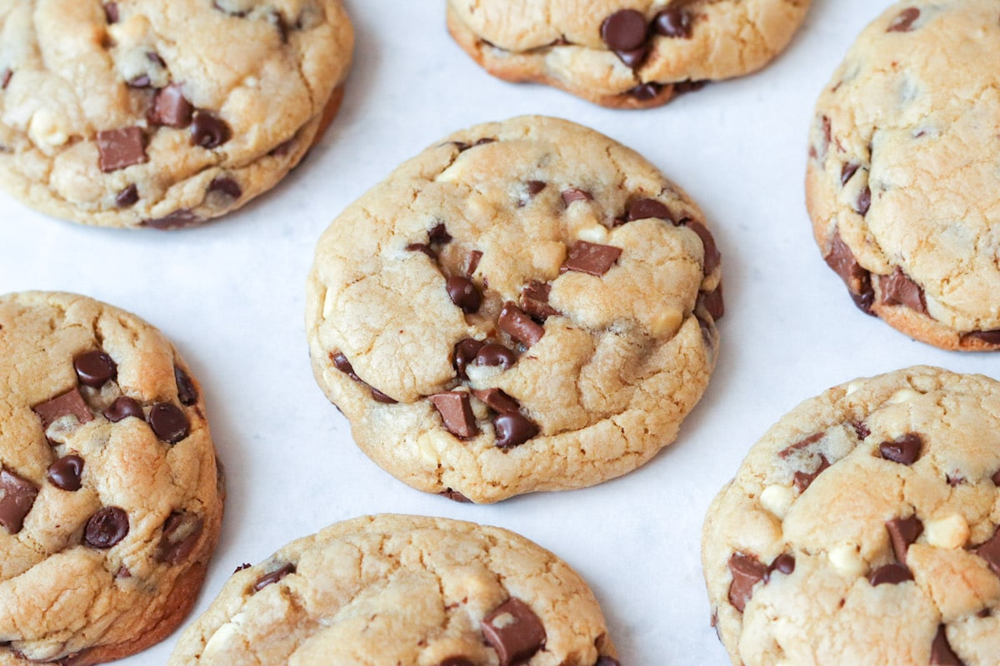

Cookies estilo NY
Disfruta de las clásicas cookies estilo Nueva York: grandes, suaves por dentro y con trozos de chocolate irresistibles.

Tiempo: 45 minutos
Dificultad: Media
Ingredientes:
- 200 g de mantequilla
- 150 g de azúcar blanca
- 150 g de azúcar morena
- 2 huevos
- 1 cucharadita de esencia de vainilla
- 400 g de harina
- 1 cucharadita de bicarbonato de sodio
- 300 g de chispas de chocolate
Preparación:
- Precalienta el horno a 180°C.
- En un bol, mezcla la mantequilla con los azúcares hasta obtener una crema homogénea.
- Añade los huevos y la esencia de vainilla, y mezcla bien.
- Incorpora la harina y el bicarbonato de sodio, y mezcla hasta formar una masa.
- Agrega las chispas de chocolate y mezcla suavemente.
- Forma bolas de masa y colócalas en una bandeja para hornear con papel manteca.
- Hornea durante 10-12 minutos o hasta que los bordes estén dorados.
- Deja enfriar antes de servir.